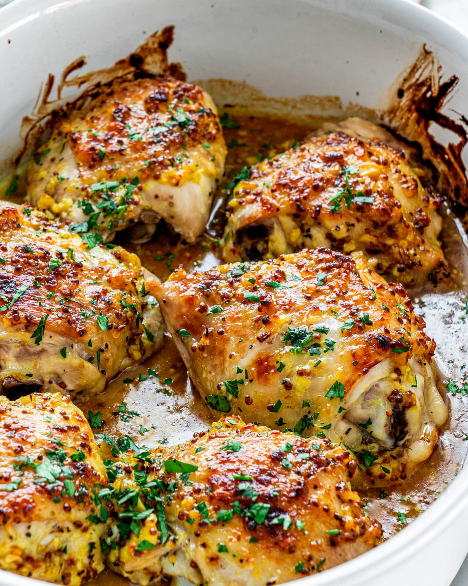

Sous Vide Garlic Chicken Thighs

Description
The following recipe is meant as a starter meal
for first time users of the Sous Vide.
Ingredients
- Raw,bone-in,skinless chicken Thighs
- Garlic cloves
- Salt
- Pepper
Steps
- Rinse chicken and season with salt and pepper
- Vaccuum seal chicken in bag with fresh garlic cloves
- Cook in Sous Vide at 250 degrees for 10 hours
- Remove chicken from bag and quickly sear both sides on cast iron skillet
- Enjoy!